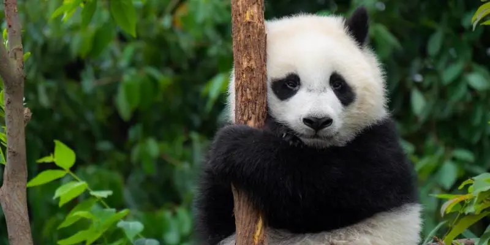
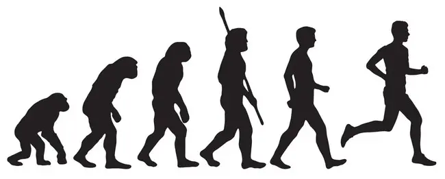

Capitulo 3
Rol de los seres vivos en los ecosistemas
El quinto principio de la naturaleza define la función de los seres vivos, que al interactuar con su entorno físico mantienen la estabilidad del planeta y las condiciones para la vida.
El origen de la vida
Antes de la propuesta de la hipótesis de Gaia, se asumía que la Tierra disponía de las condiciones
apropiadas para que la vida se produjera en ella, la cual se adaptó a dichas condiciones existentes.
La Hipótesis de Gaia especifica que a partir de unas condiciones primarias se promovió el inicio de la
vida en la Tierra, y que estas primeras formas de vida modificaron el entorno o ambiente físico para
promover y conservar la habitabilidad del planeta y las condiciones adecuadas para su existencia y
bienestar.
Evolución del planeta Tierra
La abundancia cósmica de los elementos químicos, su distribución en la formación de la Tierra y su
capacidad de combinarse y formar compuestos solubles en agua fueron factores determinantes para el
surgimiento de la vida. Por consiguiente, los constituyentes primarios de los seres vivos se formaron
abióticamente y en ausencia de oxígeno.
Ciertamente, los seres vivos y la eco esfera interaccionan dentro de un sistema (biosfera)
retroalimentado y autorregulado para mantener un entorno físico y químico óptimo para la vida, y este
entorno físico-químico se modifica conforme evolucionan los seres vivos en la Tierra.
Evolución de los seres vivos y su impacto sobre la Tierra
En sus inicios la Tie1ra se caracterizó por un ambiente con una intensa actividad volcánica y de
intemperismo, así como expuesta frecuentemente al bombardeado de meteoritos y restos de asteroides, lo
que generaba en la atmósfera un intenso calor por las altas temperaturas.
Cuando la Tierra se enfrió a temperaturas promedio menores de 100 °C, propició la condensación del vapor
de agua, que originalmente procedía de su interior y que por acción del vulcanismo fue expuesta a la
atmósfera. De esta forma se dio inicio a la precipitación del agua en forma líquida desde la atmósfera
primitiva a la litosfera, por la abundancia de las precipitaciones se formó la hidrosfera (océanos).
Con la condensación del agua, al mismo tiempo, se disolvieron los gases solubles en agua quedando el
nitrógeno (N2) como el gas dominante en la atmósfera primitiva; el proceso de sedimentación originó un
depósito de materiales en el fondo de los océanos.
Los constituyentes simples de los seres vivos se formaron abióticamente y en la ausencia de oxígeno
libre, ya que este elemento al ser muy reactivo hubiera oxidado las moléculas orgánicas que son
fundamentales para la vida. Por la ausencia del oxígeno libre, los primeros organismos fueron
anaeróbicos quimioheterótrofos (bacterias Archaebacteria y la Eubacteria), que procesaron el metano como
alimento, siendo éste el primer proceso metabólico primitivo. Con el tiempo. los organismos
evolucionaron y se desarrollaron varios tipos de organismos: los anaeróbicos quimioautótrofos y los
anaeróbicos autótrofos (sulfurobacterias fotos intéticas).
Las cianobacterias (bacte1ias fotosintéticas) al transformar el agua y el óxido de carbono en materia
orgánica, como subproducto liberan oxígeno, la disipación de oxígeno libre a la atmósfera cambió
significativamente el ambiente de la Tierra primitiva; se inicia la acumulación de oxígeno hasta
constituir actualmente el 20% de la atmósfera.
Surgen los organismos aeróbicos y con base en la selección natural y con el tiempo, evolucionaron y se
desarrollaron varios tipos de organismos como los organismos anfibioaeróbicos y los organismos
eucariontes.
Conforme se desarrolló la capa de ozono envolviendo a nuestro planeta e impidiendo que la radiación
ultravioleta llegara a la superficie de la Tierra, los organismos superiores pudieron salir de los
océanos y colonizar las áreas continentales surgiendo las plantas vasculares.
Con base en el oxígeno los organismos aeróbicos desarrollaron otros dos procesos bioquímicos: la
transformación del sulfuro y la transformación del nitrógeno. Posteriormente, se desarrollaron el resto
de los ciclos biogeoquímicos, los cuales están fundamentados en reacciones de oxidación-reducción,
ácido-base y de precipitación.
Bienes y servicios de los ecosistemas
El sexto principio de la naturaleza establece que los ecosistemas, con una productividad y sustentabilidad finita, brindan bienes y servicios al ser humano.
Productos de los ecosistemas
Los productos que se obtienen de los ecosistemas son:
- Alimentos. donde se incluye pescado y otros productos del mar, así como animales silvestres.
- Materia prima como: materiales para la construcción, minerales, madera y combustibles.
- Recursos energéticos. como petróleo. carbón y gas natural.
- Medicinas y productos farmacéuticos.
- Materias primas para la elaboración de vestimenta.
- Recursos genéticos para la ganadería y propagación de cultivo.
Servicios fundamentales de los ecosistemas
Los ecosistemas naturales brindan servicios que son fundamentales para el sostenimiento de la vida, algunos ejemplos de estos servicios son:
- El mantenimiento de la biodiversidad, de la que a su vez se derivan materiales claves para las actividades agrícolas, farmacéuticas e industriales.
- La protección contra la radiación solar de alta energía, como los rayos ultravioleta, que son perjudiciales a todos los seres vivos.
- La limpieza del aire, agua y suelo a través de los ciclos biogeoquímicos.
- La estabilización parcial del clima, por medio de la moderación de los eventos atmosféricos extremos.
Factor limitante y capacidad de carga
El séptimo principio básico de la naturaleza establece que el factor limitante y la capacidad de carga son determinantes en la dinámica poblacional de las especies.
Factor ecológico y rango de tolerancia
Los factores ecológicos influyen sobre los seres vivos de las siguientes formas:
- Eliminan especies de zonas cuyas características climáticas o fisicoquímicas no son apropiadas, de esta forma influyen así la distribución geográfica de las especies.
- Determinan las tasas de natalidad y mortalidad de diversas especies, actuando sobre los ciclos de desarrollo y provocando emigraciones, de esta forma influyen de en la densidad de las poblaciones.
- Favorecen la adaptación de las especies, vía modificaciones cuantitativas del metabolismo y cualitativas tales como la diapausa, hibernación, estivación y reacciones fotoperiódicas, entre otras.
Ley del mínimo y ley de tolerancia
Con base en la Ley del Mínimo y la Ley de Tolerancia, se puede establecer que:
- Las especies presentan un rango de tolerancia amplio para unos factores y un rango reducido para otros factores.
- Las especies con un rango amplio de tolerancia para la mayoría de los factores ambientales presentan una amplia distribución geográfica.
- Invariablemente las especies no presentes están en la naturaleza con rangos de tolerancia óptimos.
- Las especies en sus diversas etapas de desarrollo varían en sus respuestas de tolerancia a los factores ambientales y donde la etapa de reproducción es la más sensible al ambiente.
- Las interacciones entre los factores físicos. químicos y biológicos generan cambios en las respuestas a los mismos factores.
Factores determinantes de los ecosistemas
El octavo principio básico de la naturaleza establece que los diferentes ecosistemas del mundo son
definidos, determinados y caracterizados por factores bióticos y abióticos.
Los diferentes ecosistemas que conforman la Tierra se definen y caracterizan por diversos factores
determinantes, los cuales varían e influyen desde una escala macroscópica con alcance global,
continental o regional, hasta una escala microscópica que tiene alcance local, de sitio o individuo.
Altitud y latitud
La temperatura de una región geográfica también está definida por la altitud y la latitud, si nos desplazáramos hacia los polos, percibiríamos climas fríos y húmedos o conforme nos desplazáramos al pie de una montaña, hacia su cima, observaríamos un cambio similar en el clima y los tipos de vegetación.
Clima
El clima se compone de elementos meteorológicos tales como la radiación solar, la temperatura, la precipitación, le humedad relativa y los vientos. La radiación solar es la más importante, ya que es la fuente de energía de todos los demás procesos biológicos y físicos.
Topografía
Las particularidades topográficas de la superficie terrestre como montañas, cerros, lomeríos, valles y otras características del relieve influyen como factores determinantes no solo sobre los climas regionales o locales, sino también en determinadas especies endémicas vegetales y animales.
Temperatura y Precipitación
Los diferentes climas en el mundo, que a su vez determinan los diferentes ecosistemas, están definidos por los dos factores más importantes, que son la temperatura y sus variaciones estacionales, y la cantidad y distribución de la precipitación.
Especie humana
El ser humano conforme adquirió conocimientos y generó tecnologías, fortaleció paulatinamente su capacidad para cambiar la fisionomía de su entorno, pero alteró, fragmentó y destruyó los ecosistemas agotando los recursos naturales y reduciendo la biodiversidad.
Tiempo
A microescala otro modo en que pueden coexistir varias especies consiste en repartirse el espacio y recursos en tiempos distintos, al observar un sistema o comunidad en la escala temporal distinguimos que dicho sistema o comunidad varía o difiere en su fauna ya que durante el día podemos observar una fauna diurna que es totalmente distinta a la fauna nocturna.
Hábitat de las especies
A nivel microescala, no obstante que dos o más especies no pueden ocupar exactamente el mismo hábitat o área por tiempo indefinido en un hábitat donde no hay suficiencia de un recurso para satisfacer las necesidades de dichas especies, la coexistencia entre esas especies en una misma área o lugar, se da con base en los diferentes hábitos de cada una de las especies al repartirse los recursos en tiempos, formas y lugares distintos.